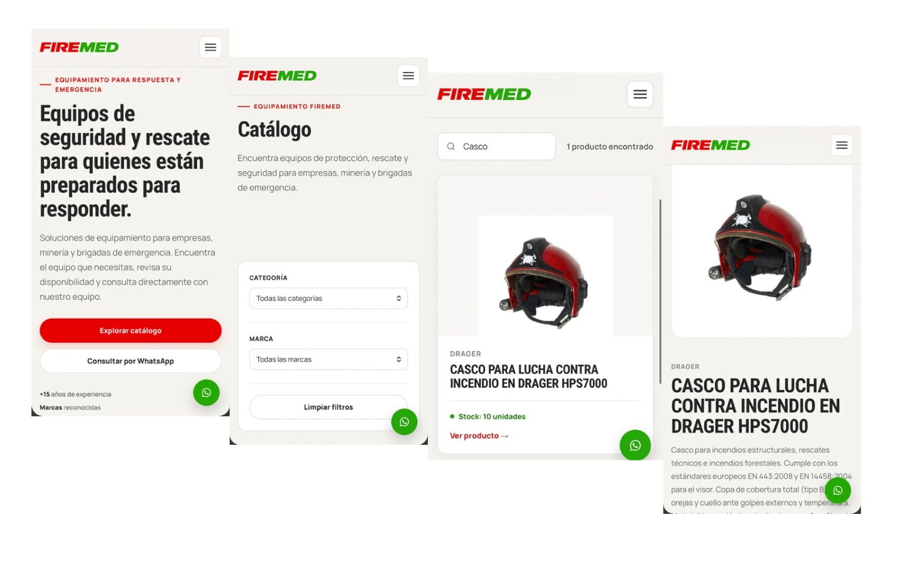

Navegación clara
Organizamos la información para que el visitante encuentre rápido lo que busca.
CANALES DIGITALES PARA GESTIÓN COMERCIAL B2B
Analizamos y optimizamos los canales digitales de tu negocio industrial para que tus clientes encuentren lo que necesitan y puedan contactarte por llamada, correo o WhatsApp.
✳ Primera conversación sin compromiso de pago
Productos, información técnica y una forma clara de contactar a tu equipo.
EL RETO
En muchos negocios industriales B2B, actualizar y gestionar la web exige tiempo y recursos. Cuando el visitante no entiende la oferta, no encuentra una ficha o no sabe cómo consultar, esa visita difícilmente llega a ventas.
En Kumateq entendemos tu operación y definimos contigo qué mejorar. Construimos una solución a medida para el momento de tu negocio y acompañamos su evolución.
Organizamos la información para que el visitante encuentre rápido lo que busca.
Presentamos cada producto o servicio en una página que ayude a evaluarlo.
Facilitamos la llamada, el correo o el mensaje de WhatsApp en el momento oportuno.
QUÉ PODEMOS CONSTRUIR
La solución se define según tus objetivos, el alcance del proyecto y la capacidad de tu equipo para operarla.
Una página de aterrizaje que presenta tu propuesta con claridad y convierte visitantes en contactos comerciales. Ideal para campañas o productos específicos.
Un sitio con navegación sencilla y fichas individuales de productos o servicios, con botones de contacto para generar consultas.
Una tienda online con catálogo y compra directa desde tu web, integrando una pasarela de pagos para tarjetas y Yape.
Soluciones a medida, sin plantillas genéricas. Entendemos tu negocio antes de definir el canal; avanzamos siempre con la conformidad de tu equipo.
CÓMO TRABAJAMOS CONTIGO
Conocemos tu situación, acordamos el alcance y ejecutamos una solución que puedas seguir usando y mejorando.
Conversamos para entender tu negocio, objetivos y situación actual.
Te enviamos una propuesta clara con alcance y precio según tus necesidades.
Analizamos tu presencia digital y detectamos oportunidades concretas.
Definimos prioridades y una solución digital adaptada a tu operación.
Desarrollamos u optimizamos el canal digital según lo acordado.
Gestionamos el sitio y medimos el tráfico para acompañar su evolución.

MIRA UNA SOLUCIÓN EN ACCIÓN
La demo de FIREMED muestra cómo una empresa de equipamiento para rescate puede presentar productos y facilitar el contacto comercial desde su sitio.
Es una referencia de lo que podemos construir. Cada proyecto se adapta a las necesidades y al portafolio de la empresa.
Ver demo de FIREMED ↗INVERSIÓN BASE
El precio final se define según el alcance y las necesidades específicas de tu negocio. Estos importes son una referencia inicial para conversar.
Precio base; el alcance se acuerda después de conocer tu necesidad.
Gestión del sitio web y medición de tráfico para seguir mejorando.
HABLEMOS DE TU NEGOCIO
Si ya tienes presencia digital y quieres mejorarla, o si necesitas crear un canal para generar oportunidades comerciales, conversemos sin compromiso de pago.